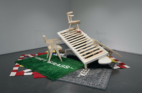
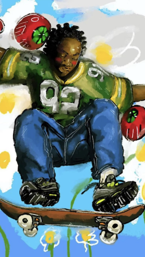
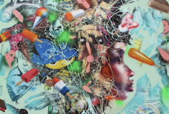

home
inspiration
top fives
Hi, my name is Oscar Rosales
I am a designer, visionary, & advocate
These are a few artists who inspire me
Virgil
Abloh

Abloh's creative influence extended far beyond
the runway, with collaborations spanning art,
music, and technology. He was celebrated for his
innovative approach to design, often incorporating
elements of irony, deconstruction, and cultural
commentary into his collections. Beyond his
fashion endeavors, Abloh was also a prolific DJ,
architect, and visual artist, with his work
exhibited in galleries and museums worldwide. His
multidisciplinary approach to creativity made him
a trailblazer and icon for a new generation of
artists and designers.
Vxmeee

Vxmeee is a digital artist known for their captivating
and surreal illustrations. With a distinctive style that
blends vibrant colors, intricate details, and elements of
fantasy and nature, Vxmeee's artwork transports viewers to
imaginative worlds filled with wonder and intrigue. Their
creations often explore themes of mysticism, dreams, and the
beauty of the natural world, captivating audiences with their
unique visual storytelling. Through their art, Vxmeee invites
viewers to escape reality and embark on a journey of creativity
and exploration.
David
Choe

David Choe is a multifaceted artist known for his bold and
provocative creations spanning graffiti, street art, painting,
and illustration. Emerging from the underground art scene,
Choe gained recognition for his uninhibited style, characterized
by vibrant colors, exaggerated figures, and raw emotion.
His work often delves into themes of sexuality, identity, and cultural
commentary, challenging societal norms and conventions.
Beyond his artistic endeavors, Choe has also made headlines for
his unconventional life experiences, including a stint in prison and a
highly successful career as a muralist and commercial artist.
With a fearless approach to self-expression, David Choe continues
to push boundaries and inspire audiences worldwide.
Send Email